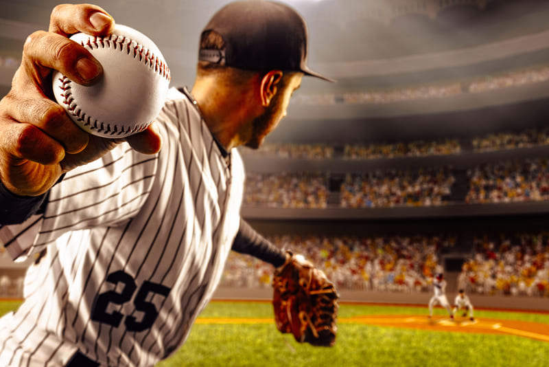
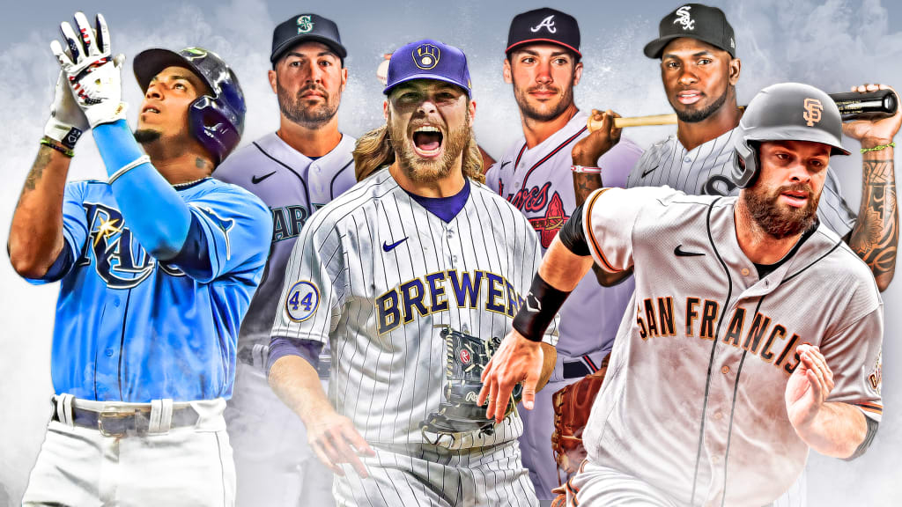

Béisbol, deporte de competición que se practica con una bola dura y un bate entre dos equipos de nueve jugadores cada uno. Un partido de Beisbol se divide en nueve periodos de juego, cada uno de los cuales se llama inning (entrada).
Desarrollo
En México existe una gran pasión por los deportes y aunque el futbol es el más popular entre la población, el béisbol se ha ganado un lugar entrañable en el corazón de gran parte de los mexicanos, con una historia fascinante y no por nada es llamado el rey de los deportes, el cual no cuenta con límite de tiempo y los extra innings pueden volverse cardiacos para sus aficionados
A ciencia cierta es imposible asegurar en donde realmente sé jugo realmente el primer partido de béisbol en México, varias ciudades reclaman el honor y a pesar de los titánicos esfuerzos para descubrir el lugar exacto, todavía ni los mismos historiadores se han puesto de acuerdo. Pero analizando todos los estudios realizados, son tres ciudades las que se acercan más a la calificación: Guaymas en el estado de Sonora, Nuevo Laredo en el estado de Tamaulipas y Cadereyta Jiménez en el estado de Nuevo León.
Motivación
Elegimos el beisbol porque no es un deporte al que se le da la importancia que debería en México, ya que a diferencia del fútbol la gente no se reúne a visualizarlo ni presencial y mucho menos virtualmente. Aunque en las escuelas hay equipos de beisbol no se promocionan tanto. Por lo que el fin de este artículo es incentivar al juego de este deporte.

Representación de un juego de beisbol.Video de la historia del béisbol mexicano.
Este video trata el tema de los inicios del béisbol en México, así como también todo lo acontecido a lo largo de la historia de este deporte en nuestro país.
Personalmente recomiendo mucho este video ya que trata con detalle y claridad este tema.
Top 10 Beisbolistas
Ty Cobb
Barry Bonds
Stan Musial
Joe DiMaggio
Willie Mays
Nolan Ryan
Mickey Mantle
Ted Williams
Babe Ruth
Este es un ranking de los 10 mejores Beisbolistas de la historia, todos han dejado una gran marca a lo largo de la historia de dicho deporte
Esta lista de sitios oficiales, es una lista donde se presentaran enlaces con más
información sobre el béisbol
Fuentes de información.
Investigación
12/11/2022
TOP 9 EQUIPOS DE LA MLB 1-3:
A lo largo de la historia, el beisbol ha sufrido grandes cambios y transformaciones que
caracterizan a cada época y a cada cultura, por lo que se suele hablar de diferentes
equipos, con el objetivo de dar una clasificación general de las
distintos equipos alrededor de la MLB.
New York Yankies: Comenzaron a jugar en la temporada 1901 como los Baltimore Orioles, pues se encontraban
en Baltimore (Maryland), hasta que en 1903 los políticos Frank Farrell y William Devery compraron la franquicia y la trasladaron
a la isla neoyorquina de Manhattan, por lo que se cambió el nombre a New York Highlanders.
Los Angeles Dodgers: El equipo fue fundado en 1883 en la entonces ciudad independiente de Brooklyn como Brooklyn
Atlantics, dentro de la American Association (AA). En 1890 se unieron a la Liga Nacional y durante sus primeros cuarenta años de vida
tuvieron seis nombres diferentes (Atlantics, Grays, Grooms, Bridegrooms, Superbas y Robins) hasta que a principios de la década de los
años 1930 adoptaron su denominación más conocida: Brooklyn Dodgers. En 1958 los Dodgers abandonaron Nueva York para trasladarse a Los
Ángeles
Boston Red Sox: Fueron creados en 1893 como la franquicia de liga menor de la ciudad de Toledo (Ohio) en la Liga
Occidental (Western League). Se mudaron a Boston cuando esta liga se convirtió en la Liga Americana en 1900. El propietario del
equipo, John I. (Wikipedia.com 12/11/2022 HISTORIA DE LOS BOSTON RED SOX)
TOP 9 EQUIPOS DE LA MLB 4-6:
A lo largo de la historia, el beisbol ha sufrido grandes cambios y transformaciones que
caracterizan a cada época y a cada cultura, por lo que se suele hablar de diferentes
equipos, con el objetivo de dar una clasificación general de las
distintos equipos alrededor de la MLB.
Chicago Cubs: El equipo fue fundado en 1870 con el nombre de Chicago White Stockings y en 1876 se unieron a la NL
como uno de los miembros fundadores de la competición. En 1890 cambiaron de nombre a Chicago Colts y en 1898, a Chicago Orphans.
La franquicia adoptó la denominación de Cubs en 1903.
San Francisco Giants: La historia de los Gigantes de San Francisco se inicia en 1883 bajo el nombre de New York Gothams,
como el segundo equipo de béisbol de Nueva York, siendo fundada la franquicia por el millonario de las tabacaleras John B. Day y el
veterano jugador de béisbol amateur Jim Mutrie.
New York Mets: El equipo de los Mets se convirtió en uno de los más fuertes de las grandes ligas desde mediados
de la década de 1980, con jugadores como el lanzador de bola rápida Dwight Gooden, el jardinero derecho Darryl Strawberry,
el receptor Gary Carter, y el primera base Keith Hernández
(wikipedia.com 12/11/2022 HISTORIA DE NEW YORK METS)
TOP 9 EQUIPOS DE LA NBA 7-9:
A lo largo de la historia, el beisbol ha sufrido grandes cambios y transformaciones que
caracterizan a cada época y a cada cultura, por lo que se suele hablar de diferentes
equipos, con el objetivo de dar una clasificación general de las
distintos equipos alrededor de la MLB.
St. Louis Cardinals: Esta franquicia había sido desde 1901 la de los Cerveceros de Milwaukee, pero después de la
temporada de 1902, la mudaron a San Luis, hasta que después de la temporada de 1953 se convirtieron en los Orioles de Baltimore,
equipo que actualmente juega en la Liga Americana.
Philadelphia Phillies: Fueron fundados en 1883 con el nombre de Philadelphia Quakers y siete años después adoptaron como
oficial el apodo con el que eran conocidos en la prensa local: Phillies. Esto hace de ellos el equipo con mayor antigüedad de uso
del mismo nombre en la misma ciudad de todo el deporte profesional estadounidense.
Los Angeles Angels: Los Angeles Angels fueron fundados en 1961 por la estrella de la música country y actor Gene
Autry. El grupo inversor de Autry se hizo con los derechos de la nueva franquicia en diciembre de 1960 por 2,1 millones de dólares.
(wikipedia.com 12/11/2022 HISTORIA DE ANGELES ANGELS)

MLB.
La historia del beisbol
21/01/23
El origen del juego
El beisbol es uno de los deportes más populares en Estados Unidos y en varios países de América Latina. Se cree que tiene sus raíces en juegos tradicionales ingleses como el "rounders" y el "cricket". Sin embargo, el juego como se conoce hoy en día se desarrolló en Estados Unidos a finales del siglo XVIII.
Un partido de beisbol en el estadio de los New York Yankees.
El crecimiento del juego
El beisbol se convirtió rápidamente en un pasatiempo popular en Estados Unidos en el siglo XIX. Se jugaba en parques y campos abiertos, y las primeras ligas profesionales se formaron en el siglo XIX. La Liga Nacional de Beisbol se fundó en 1876 y la Liga Americana en 1901. El primer partido de las Series Mundiales se jugó en 1903.
El beisbol en la actualidad
Hoy en día, el beisbol es uno de los deportes más populares en Estados Unidos y en varios países de América Latina. Se juega en niveles amateur y profesional, y las Series Mundiales de cada año atraen a millones de espectadores. También es un deporte olímpico desde 1992.
 Beisbol
Beisbol.png) Top 10 Beisbolistas
Top 10 Beisbolistas
 Investigación
Investigación  La historia del beisbol
La historia del beisbol